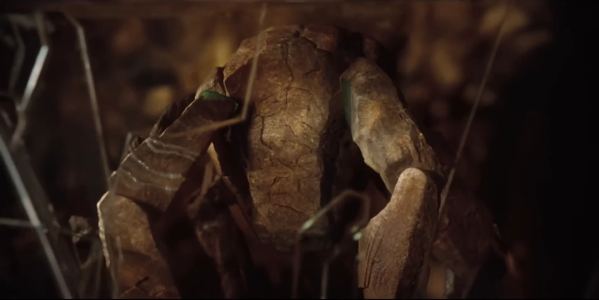

Rocky's Big Day, Statment!
If you have received this transmission, you are invited to Rocky's party event!
May 3rd 7pm Tau Ceti E

If you have received this transmission, you are invited to Rocky's party event!
May 3rd 7pm Tau Ceti E